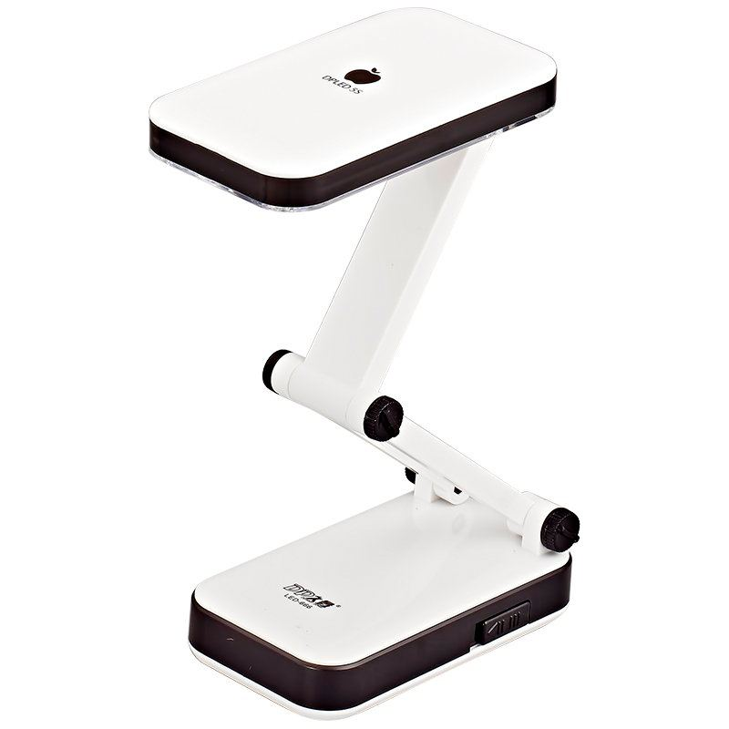
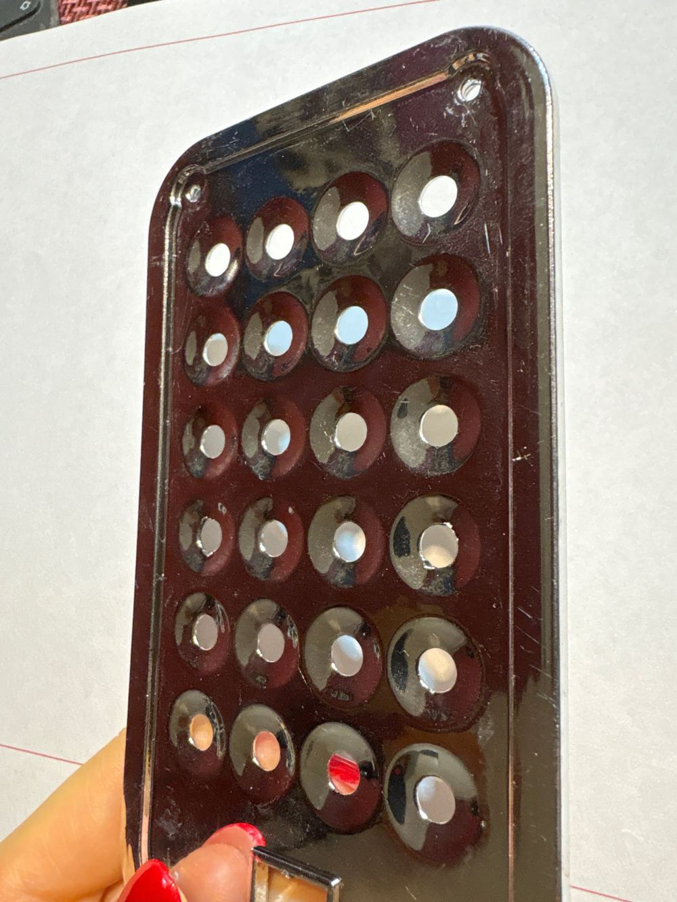
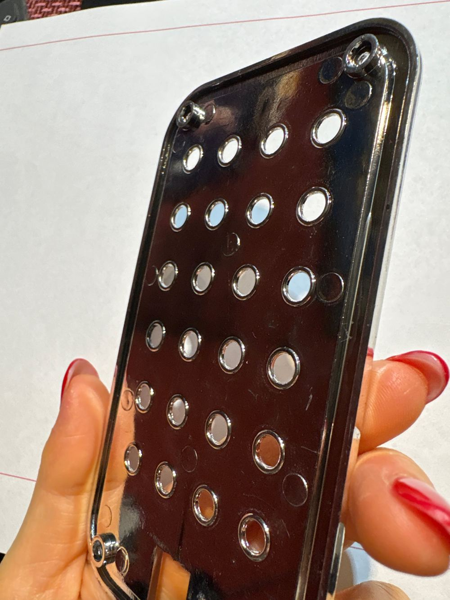
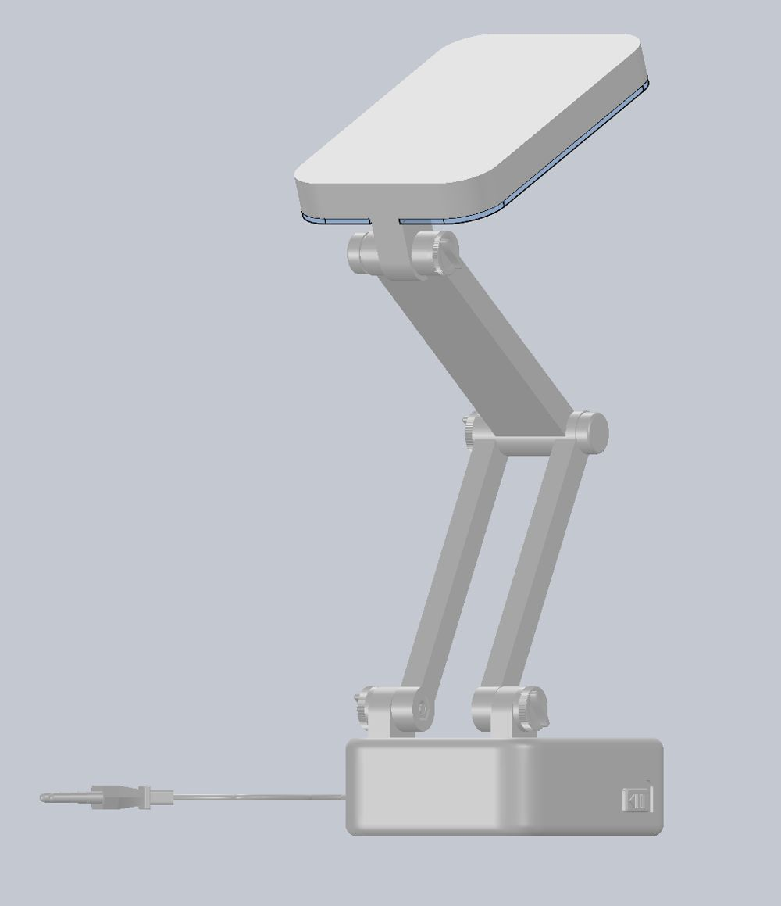
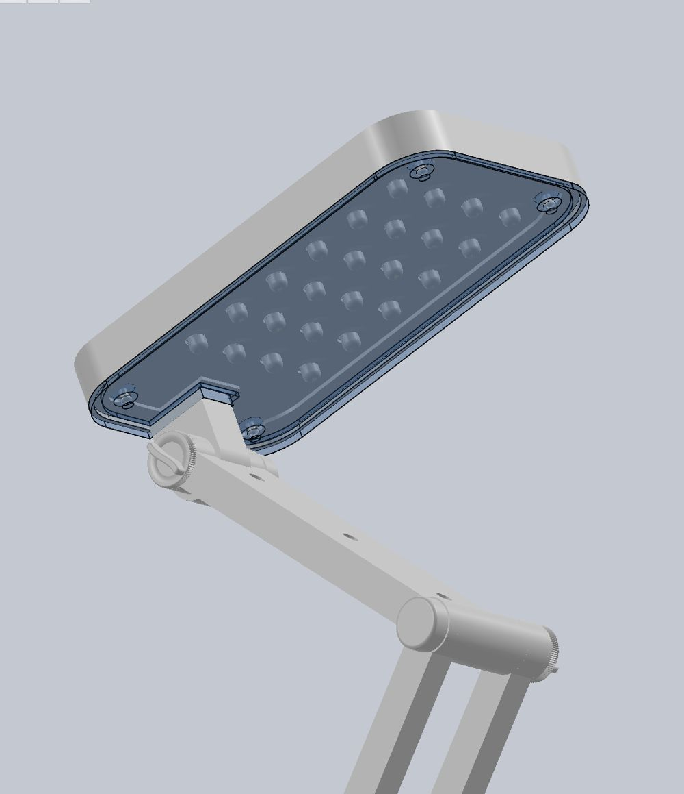
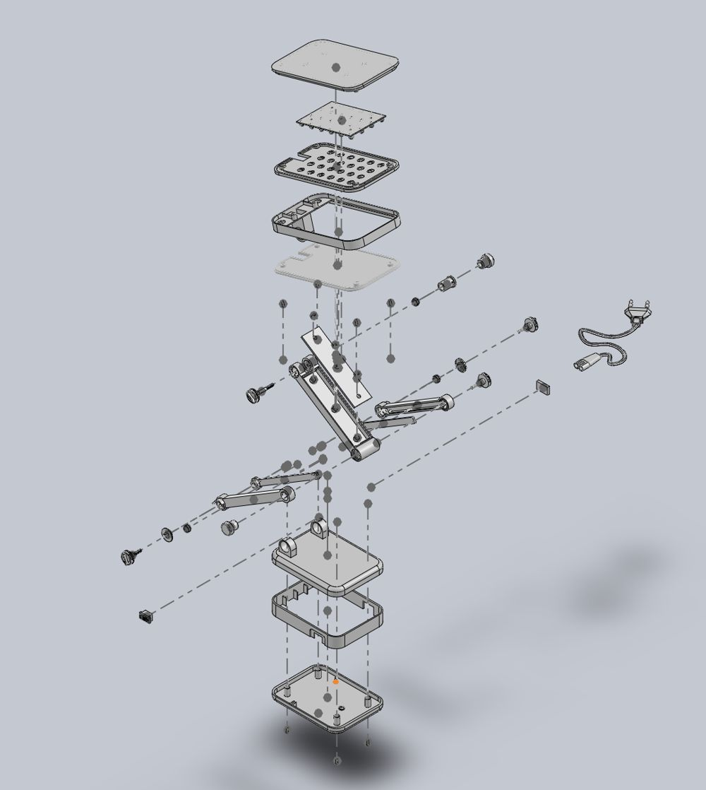

Phase 1 [M1] · Reverse engineering
Phase 1
Desk lamp
The Illusion of Simplicity...
Our first object looks as simple as an object can: a foldable white desk lamp with a black frame and a flat, minimal shell.
It is too easy to model. That was the first thing we said. The next weeks proved us wrong.

The object
An articulated lamp with 24 LEDs, a reflector, a transparent cover, three arms, hinge pieces, screws, a switch, a power cable and a small driver circuit. Four people, four sets of parts, one assembly to rebuild.
Disassembly
We took everything apart and sorted it. Far more parts than the outside suggests.


Measuring
Everything was measured by hand with a caliper, because the details decide whether the 3D assembly fits. Ribs, screw posts, hinge ends: none of them are visible from outside.




Modeling
Each part was modeled separately in SolidWorks, more than twenty in total. Some of us came from Inventor, some from a design degree, so the first week was mostly learning how the software thinks.




Assembly & drawings
Every part fits, folds and hangs together. Here is the full assembly turning, then the exploded view, then the technical drawings.

What is in the drawings
Three part drawings plus one for the lamp base, an assembly drawing with its bill of materials, and an exploded perspective with numbered parts.
Click any drawing to open the PDF.


Challenges
The hard part was never the outer shape. It was the tiny details inside, and learning a new program while measuring to the millimetre.
Inês
ChallengePrecision in the lamp head layers.
LearningLinear Pattern and Mirror save hours.
João
ChallengeTurning 1:1 physical measurements into the digital model.
LearningNew detailing tools and error-free assemblies.
Lucía
ChallengeMoving from Inventor to SolidWorks.
LearningQuick adaptation to a new interface and workflow.
Martín
ChallengeThe learning curve and complex geometries.
LearningHow SolidWorks thinks compared with other 3D programs.